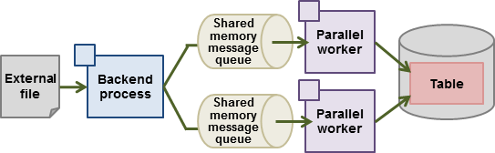

High-speed data load executes COPY FROM commands using multiple parallel workers. Because conversion of data from the external file to the appropriate internal format, table creation, and index creation are performed in parallel, it is possible to load large volumes of data at high speed.
Note
This feature is available only in the Advanced Edition.
Architecture of high-speed data load
High-speed data load is required for parameter setting and resource estimation, so a brief description of its architecture is provided below.

High-speed data load uses a single backend process collaborating with multiple parallel workers to perform data load in parallel. Data is exchanged between the backend process and parallel workers via shared memory message queues. The backend process distributes the loaded data of external files to multiple parallel workers. Each parallel worker then converts the data loaded from the shared memory message queue into the appropriate internal format, and inserts it into the table. If the table has indexes, their keys are extracted and inserted into the index page.
See
Refer to "High-Speed Data Load" in the Operation Guide for details.